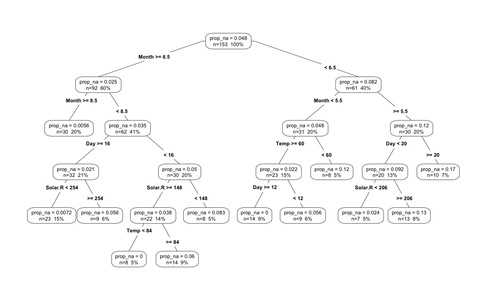

It can be useful when doing data analysis to add the proportion of missing
data values into your dataframe. add_prop_na adds a column named
"prop_na", which contains the proportion of missing values in that row.
You can specify the variables that you would like to show the missingness
for.
add_prop_na(data, ..., label = "prop_na")
| data | a dataframe |
|---|---|
| ... | Variable names to use instead of the whole dataset. By default this
looks at the whole dataset. Otherwise, this is one or more unquoted
expressions separated by commas. These also respect the dplyr verbs
|
| label | character string of what you need to name variable |
a dataframe
airquality %>% add_prop_na()#> # tibble [153 x 7] #> Ozone Solar.R Wind Temp Month Day prop_na_all #> <int> <int> <dbl> <int> <int> <int> <dbl> #> 1 41 190 7.4 67 5 1 0.0000000 #> 2 36 118 8.0 72 5 2 0.0000000 #> 3 12 149 12.6 74 5 3 0.0000000 #> 4 18 313 11.5 62 5 4 0.0000000 #> 5 NA NA 14.3 56 5 5 0.3333333 #> 6 28 NA 14.9 66 5 6 0.1666667 #> 7 23 299 8.6 65 5 7 0.0000000 #> 8 19 99 13.8 59 5 8 0.0000000 #> 9 8 19 20.1 61 5 9 0.0000000 #> 10 NA 194 8.6 69 5 10 0.1666667 #> # ... with 143 more rowsairquality %>% add_prop_na(Solar.R)#> # A tibble: 153 x 7 #> Ozone Solar.R Wind Temp Month Day prop_na_vars #> <int> <int> <dbl> <int> <int> <int> <dbl> #> 1 41 190 7.4 67 5 1 0 #> 2 36 118 8.0 72 5 2 0 #> 3 12 149 12.6 74 5 3 0 #> 4 18 313 11.5 62 5 4 0 #> 5 NA NA 14.3 56 5 5 1 #> 6 28 NA 14.9 66 5 6 1 #> 7 23 299 8.6 65 5 7 0 #> 8 19 99 13.8 59 5 8 0 #> 9 8 19 20.1 61 5 9 0 #> 10 NA 194 8.6 69 5 10 0 #> # ... with 143 more rowsairquality %>% add_prop_na(Solar.R, Ozone)#> # A tibble: 153 x 7 #> Ozone Solar.R Wind Temp Month Day prop_na_vars #> <int> <int> <dbl> <int> <int> <int> <dbl> #> 1 41 190 7.4 67 5 1 0.0 #> 2 36 118 8.0 72 5 2 0.0 #> 3 12 149 12.6 74 5 3 0.0 #> 4 18 313 11.5 62 5 4 0.0 #> 5 NA NA 14.3 56 5 5 1.0 #> 6 28 NA 14.9 66 5 6 0.5 #> 7 23 299 8.6 65 5 7 0.0 #> 8 19 99 13.8 59 5 8 0.0 #> 9 8 19 20.1 61 5 9 0.0 #> 10 NA 194 8.6 69 5 10 0.5 #> # ... with 143 more rowsairquality %>% add_prop_na(Solar.R, Ozone, label = "testing")#> # A tibble: 153 x 7 #> Ozone Solar.R Wind Temp Month Day testing_vars #> <int> <int> <dbl> <int> <int> <int> <dbl> #> 1 41 190 7.4 67 5 1 0.0 #> 2 36 118 8.0 72 5 2 0.0 #> 3 12 149 12.6 74 5 3 0.0 #> 4 18 313 11.5 62 5 4 0.0 #> 5 NA NA 14.3 56 5 5 1.0 #> 6 28 NA 14.9 66 5 6 0.5 #> 7 23 299 8.6 65 5 7 0.0 #> 8 19 99 13.8 59 5 8 0.0 #> 9 8 19 20.1 61 5 9 0.0 #> 10 NA 194 8.6 69 5 10 0.5 #> # ... with 143 more rows# this can be applied to model the proportion of missing data # as in Tierney et al bmjopen.bmj.com/content/5/6/e007450.full library(rpart) library(rpart.plot) airquality %>% add_prop_na() %>% rpart(prop_na_all ~ ., data = .) %>% prp(type = 4, extra = 101, prefix = "prop_na = ")